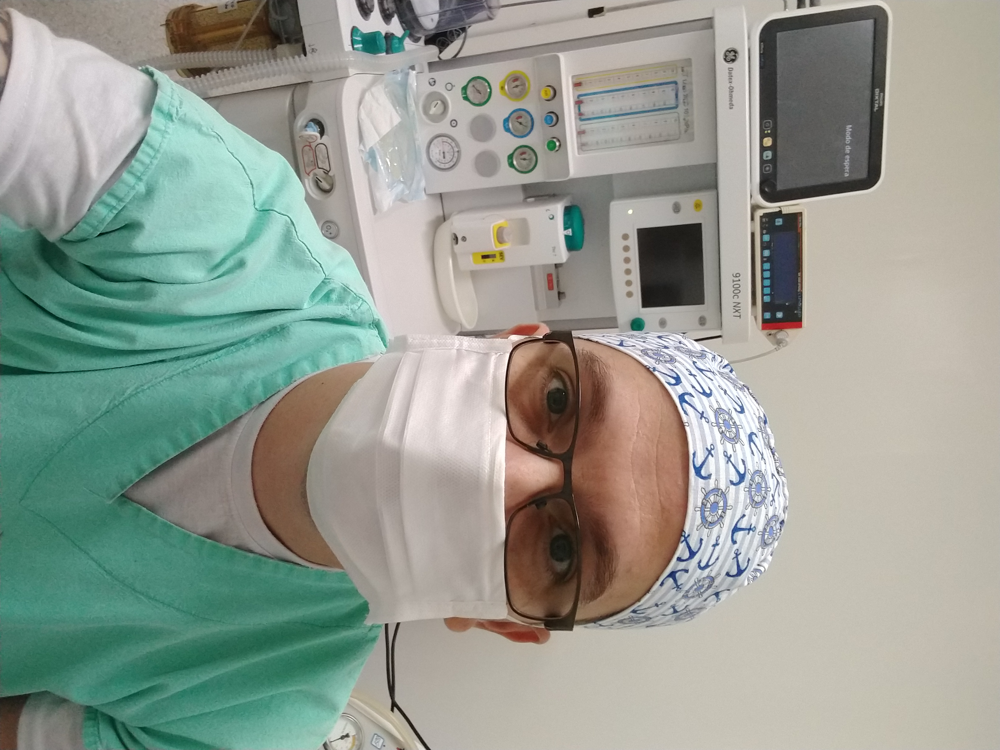
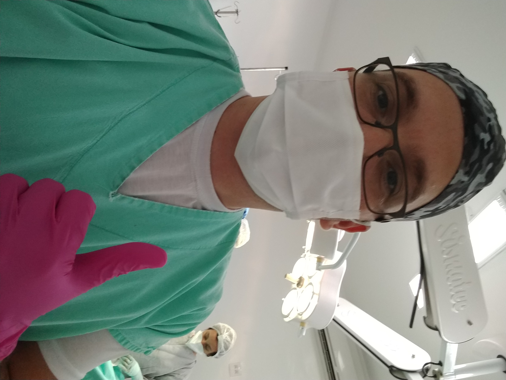
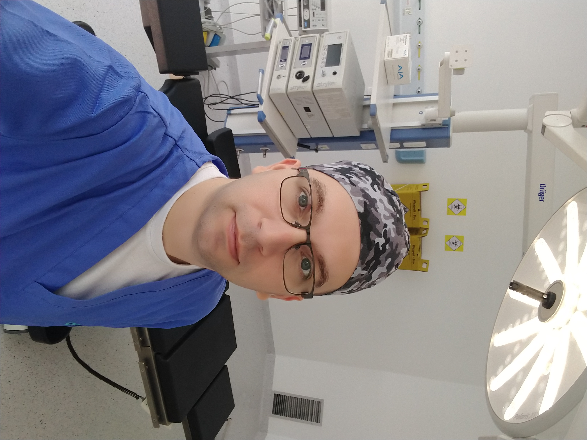
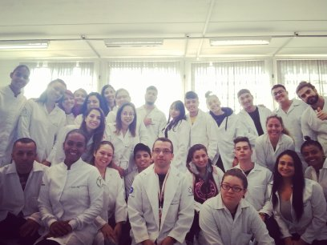
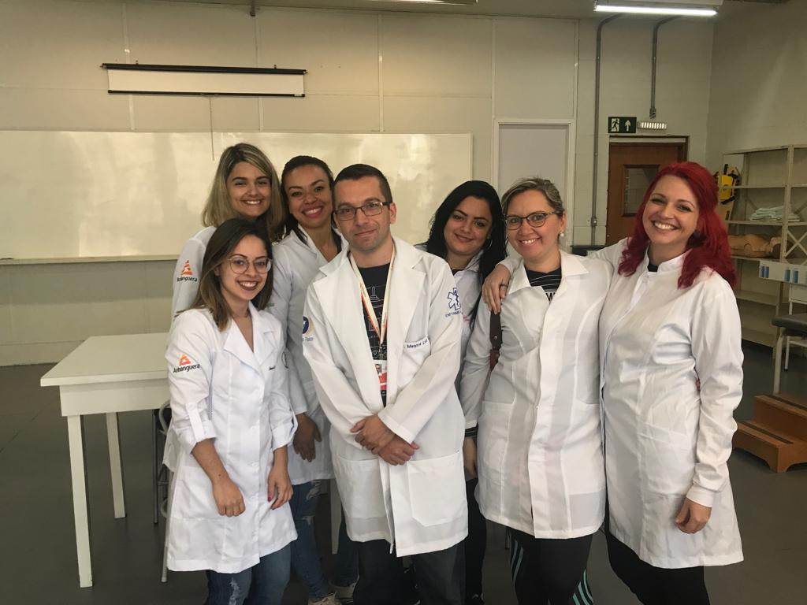
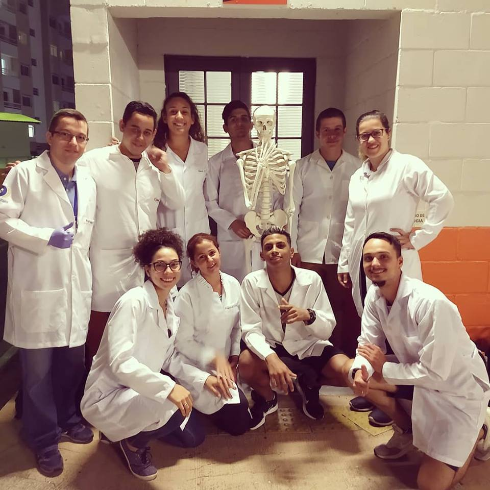

Hi, I'm Dan.
I hold a Master’s degree in Physical Education and a Postgraduate Diploma in Biomechanics. I’m also a qualified Nurse Technician and Surgical Nurse with experience in hospitals and care homes across Brazil, Ireland, and Portugal.
Alongside my work in healthcare, I’m currently developing digital solutions through LuxSolutions.tech, focused on technology and communication tools for health and care services.
The interactive chart below outlines my journey across Healthcare, Education, and IT & Development. Hover over any node to inspect detailed credentials.
📄 Download Resume (PDF)
💡
Hover or tap any node on the timeline above to display detailed credentials, institutions, and roles here.